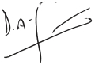

We anticipate momentous changes at the SLT Group, with results that promise to be far-reaching and exponential. SLT being a challenging player in the arena and as a resilient and multi-faceted company equipped for the future, together with our reading of the industry, will use ICT to penetrate and leverage all segments of society. This year we will unleash the power behind the Internet of Things (IoT), Artificial Intelligence (AI), Augmented Reality (AR) and Robotics for the benefit of all.
As Chief Executive Officer of the SLT Group, I am very confident in the Group’s ability to boost our bottom line as a result of the recent investments in technology and infrastructure. I am equally convinced of the ability of our business to respond to the shifting demands of our industry.
We are making exceptional progress on the process of integrating our activities at the level of the Group and have identified further opportunities for the synergy of our platforms and operations.
While much has already been accomplished to bring about this change, more remains to be done. We will continue to shape our progress along the lines of joint strategic planning, group branding strategies, optimisation of our systems and platforms and the creation of new IT platforms to provide smart solutions.
Our Commitment to Improve
The continuous improvement of our operations was a clear focus throughout the year under review. We brought to light our Centre of Excellence (CoE) initiatives during the year, whereby our Sales, Service Delivery, Network Operations and Planning Divisions became key focused functional entities contributing to more streamlined business planning and operations.
We also continued to implement our Group synergy objectives as we aspire to show ‘one face’ to the customer as a single stream of operations leading to common enterprise goals. We identified the quick wins and long-term wins under this concept, capitalising on the former last year, and expecting the latter to come into play over the next two years. Establishing the concept of shared resources will continue to enhance resource utilisation within our organisation and thus contribute to the effective controlling of our operational costs.
As we work in a fast-paced information and communications technology (ICT) industry and a market that shifts very quickly, we continually strive to remain technologically innovative. During the year under review, we accelerated many projects, especially the long-term evolution (LTE) project and the fibre to the home (FTTH) under which we rolled-out 1,000 LTE base stations and 100,000 fibre ports respectively. A significant addition to the mobile industry is underway with the Mobitel’s forthcoming 4G expansion.
Investing for Development
We remained focused on strategic investments to enhance the lifestyle of the nation and as well as continue to gear ourselves for the future. As of December 2016, SLT group had invested over Rs. 23 billion in developing the ICT infrastructure of Sri Lanka.
We completed phase V of the i-Sri Lanka project, under which we extended the reach of optical fibre to roadside cabinets. This strengthening of the core network provides Internet speeds of up to 20 Mbps to ADSL consumers with speeds up to 100 Mbps to our FTTH clients. Our island-wide network of optical fibre now extends to over 25,000 kilometres. A fixed 4G LTE wireless broadband network was used to meet the extended demand beyond the reach of wireline networks. Similarly, we released a carrier grade Wi-Fi project to enable the public to use their home broadband at public locations.
We added the new submarine cable line SEA-ME-WE 5 to our portfolio. This is capable of ultra-high speed data delivery, increasing the speed and reliability of Sri Lanka’s connectivity to global regions. This will further help cement Sri Lanka’s position as a regional digital hub, and fortify its position amongst the world’s point of presence (PoP) network.
In addition, we oversaw the construction of a new data centre at Pitipana-Homagama, which will see its completion around the second quarter of 2017.
Building our Talent Pool
Our employees remain the cornerstone of our operations. We continued to invest in their training and development to ensure that they will be ready to face future changes in technology and market conditions. We improved our performance evaluation system as well as our staff recruitment and promotion scheme (SRPS) to reflect the changing needs at SLT. This comprehensive new system will be the basis on which we develop key performance indicators (KPIs) for our workforce, and assign rewards that match performance. We similarly introduced an updated transfer policy towards the end of 2016, and expect to reap the benefits soon.
An employee survey that covered all levels of our operations across Sri Lanka revealed a satisfaction level of 71%, up from 65% from the preceding year. We will continue to identify areas in which we can improve for the benefit of all.
Navigating the Markets
SLT recorded a year on year growth in revenue of 6.3%. This is a commendable achievement when compared with the revenue growth of 4.1% recorded for the twelve months of 2015. We nevertheless did experience an increase in operational expenditure of 9.2%. This was due to the costs incurred in the restoration of damaged infrastructure affected by adverse weather conditions, as well as an increase in the International Telecommunications Operators Levy. Sales for SLT in products and services increased by a year on year factor of 6.8%. Revenues in the enterprise sector increased by 10.2% and wholesale business by 7.7% in spite of strong competition.
SLT is devising ICT-reinforced facilities for the mega investment zones of the Colombo International Financial City and the Megapolis Project. Consequently, we expect to be well-prepared to handle any and all foreign direct investments (FDIs) coming into the respective zones.
To conclude, I wish to thank all stakeholders of SLT for their contribution to our joint success in the past year, as we look forward to the opportunities that lie ahead.
Dileepa Wijesundera
Group Chief Executive Officer
17 April 2017